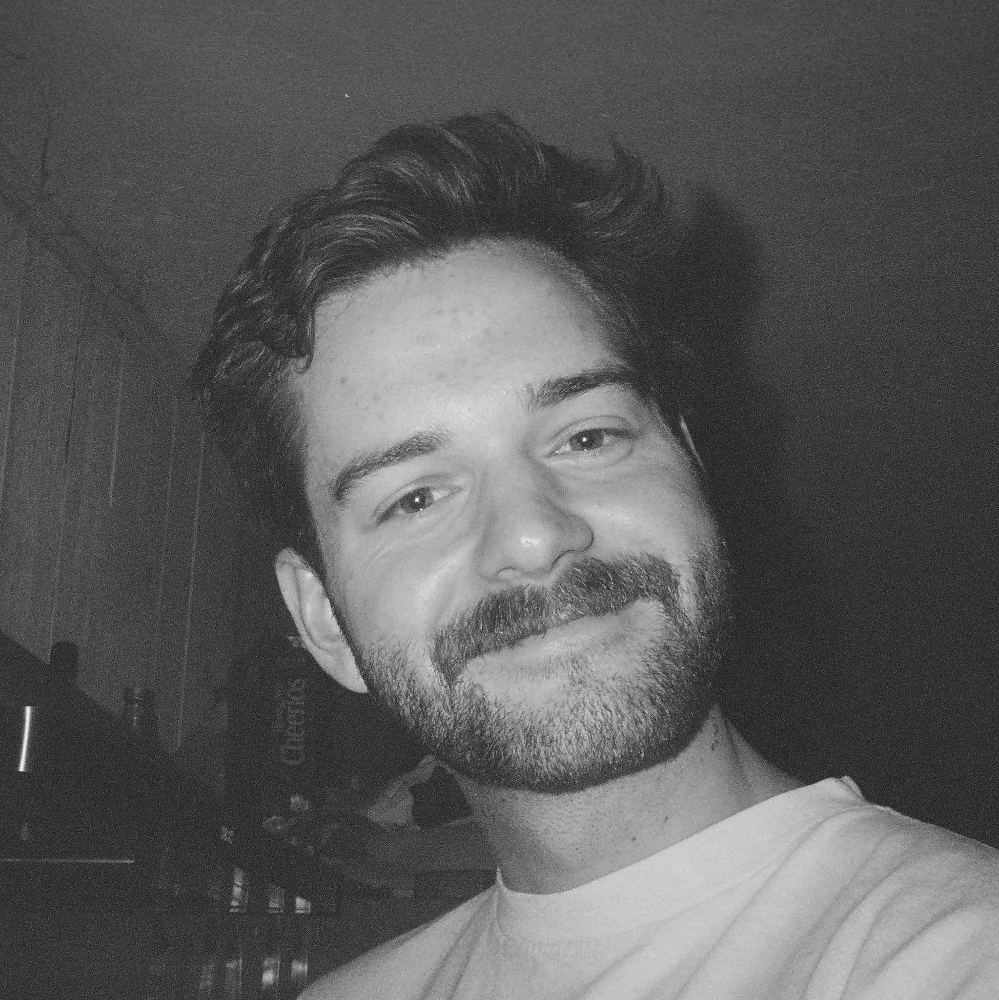

Landry Bulls
Doctoral Candidate
Department of Psychological and Brain Sciences
Dartmouth College
I'm a doctoral candidate in the Department of Psychological and Brain Sciences at Dartmouth College under the supervision of Dr. Mark Thornton in the SCRAP Lab. I'm deeply fascinated by the complexity of human social interactions and the neural mechanisms enabling people to form a sense of connection with not only other individuals, but also with the groups they inhabit - small and large.
View CV